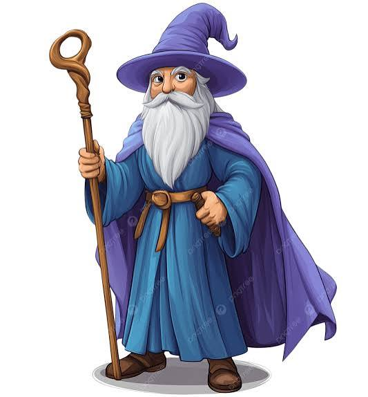
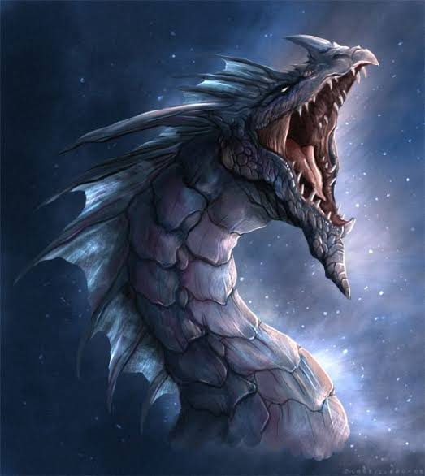

Ana Kampüs
Uçuş dersleri ve büyük salon etkinlikleri.
BİLİNMEYENİN KAPILARI AÇILIYOR
Sıradan dünyayı geride bırak. Binlerce yıllık sırlar seni bekliyor.
Uçuş dersleri ve büyük salon etkinlikleri.

Kendini korumayı ve kadim büyüleri öğren.

Ejderhalara fısıldayanlar aranıyor.
Şişelenmiş şöhret, kaynatılmış ihtişam.
Akademideki yerini ayırtmak için hazırlıklarına başla.
Akademiyi Keşfet